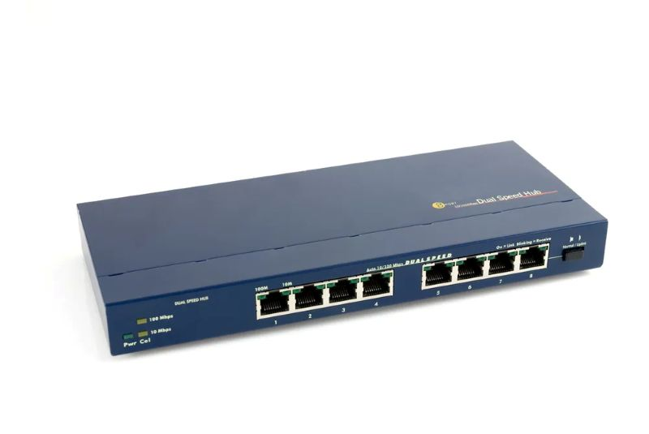
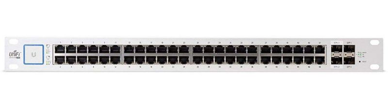
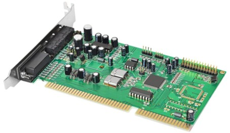
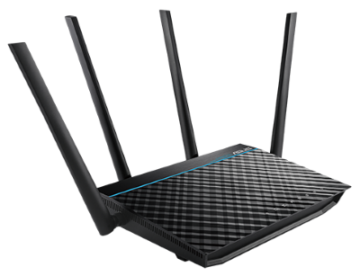
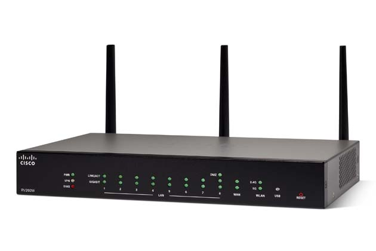

以太网
@Ethernet- 共享式以太网
- 总线型以太网 Bus Topology
- 星型以太网 Star Topology
- 工作方式：半双工
- 交换式以太网 Switched Ethernet
- 物理拓扑 Physical Topology：依然是星型 Star，或者更复杂的扩展星型 Extended Star
- 逻辑拓扑 Logical Topology：交换方式
- 工作方式：全双工
以太网设备 Device
- 中继器 Repeater
- network hardware device
- works at the physical layer of OSI model
- helps to amplify or regenerate the signals before re-transmitting it
- works as Signal Boosters
- extend the data signal from one network segment and then pass it to another network segment - scaling the size of network
- 集线器 Hub
- 多端口中继器 - multiple ports
- 工作在物理层
- 通过广播方式进行通信 - 半双工
- 主要用于信号的放大和广播，不进行数据的封包或拆包操作
- 可以将多台计算机连接在一起，构建局域网LAN
- 根据端口数量，集线器通常分为4、8、16、24、32等端口类型
- 主要缺点是广播方式会占用所有连接设备的带宽，导致效率低下 - 已逐渐被交换机取代
- 仅存在于一些特殊场景或低成本需求的网络环境中
- 特点
全端口转发
互联主机属于同一个冲突域
互联主机适配器速率必须一致
拓展网络也会相应的扩展冲突域
不具备过滤或路由数据的能力：不识别连接在其上的设备的MAC地址或IP地址 - 没有寻址能力
- 交换机 Switch
- Layer 2 Switch is a form of Ethernet switch that switches packets by looking at their physical addresses (MAC addresses).
- These switches operate at the data-link layer (or layer 2) of the Open Systems Interconnection (OSI) reference model.
- They essentially perform a bridging function between LAN segments because they forward frames based on their destination address without any concern for the network protocol being used.
- Thus, Layer 2 switches are essentially multiport bridges that operate near wire speed and have extremely low latency.
- 适配器 Adapter
- 也叫网卡 NIC - Network Interface Card
- 早期：独立
- 现在：集成化
- 拥有一个全球唯一的硬件地址 MAC地址
- 工作在OSI模型的物理层和数据链路层
- 功能：
串并转换：适配器和局域网之间是串行通信，而适配器和计算机之间是并行通信
数据缓存：网络的速率和计算机的速率不匹配，须要缓存；适配器有自己的存储器和缓存器，工作时不占用计算机的CPU
过滤：是发给自己的就接收；否则丢弃(安全)
- 路由器 Router
- A ROUTER is a networking device that is used to extend or segment networks by forwarding packets from one logical network to another.
- Routers are most often used in large internetworks that use the TCP/IP protocol suite and for connecting TCP/IP hosts and local area networks (LANs) to the Internet using dedicated leased lines.
- How Does It work?
- Routers work at the network layer (layer 3) of the Open Systems Interconnection (OSI) reference model for networking to move packets between networks using their logical addresses (which, in the case of TCP/IP, are the IP addresses of destination hosts on the network).
- Because routers operate at a higher OSI level than bridges do, they have better packet-routing and filtering capabilities and greater processing power, which results in routers costing more than bridges.
- 其它 Other
- 双绞线
- 光纤
- 同轴电缆
- 水晶头
- UPS
- ...



| Repeater | Hub | |
|---|---|---|
| 端口 | 2个 | 多个 |
| 作用 | 连接两个网段，放大和再生信号 | 连接多个设备，形成一个共享的冲突域 |
| 场景 | 用于延长单一网段的距离 | 用于构建小型局域网LAN |
中继器是解决“距离太远”的问题
集线器是解决“如何把多台电脑连在一起”的问题
都使用了相同的、简单的信号再生和广播机制



| item | desc |
|---|---|
| 物理层 | 信号转换 - 发送数据时（并行 -> 串行）；接收数据时（串行 -> 并行）
物理连接 - RJ-45 水晶头 如何在物理媒介上传输原始比特流 |
| 数据链路层 | 成帧 Framing
错误检测 CRC 寻址 - 基于MAC地址通信 如何将比特流组织成帧，并通过MAC地址在直接相连的设备间可靠地传输这些帧 |
物理层关注的是如何在物理媒介上传输原始比特流
数据链路层关注的是如何将比特流组织成帧，并通过MAC地址在直接相连的设备间可靠地传输这些帧



拓展以太网 High Speed Ethernet
- 10Base-T
- 传统以太网 Traditional Ethernet
- 是现代以太网的起点
- 虽然速度慢、已被取代，但它确立了 RJ-45 + 双绞线 + 星型拓扑的标准架构，影响深远
10Base-T 传输速率 10 Mbps 传输介质 Cat 3、Cat 4或 Cat 5 UTP 最大传输距离 100m（从主机到交换机/集线器） 拓扑结构 星型拓扑 Star Topology 连接器类型 RJ-45 水晶头 使用线对 2 对线（4 根线）：发送1,2、接收3,6 编码方式 Manchester 编码 工作模式 半双工或全双工（需支持全双工的设备） 网络设备 集线器（Hub）或早期交换机（Switch） - 快速以太网 Fast Ethernet
- 也叫百兆网
- 速率 100Mbit/s
- 1995年被正式批准为 IEEE 802.3u /100BASE-T
- 高速传输：在双绞线等介质上提供 100Mbit/s 的数据传输速率，是传统10M以太网的10倍
- 物理拓扑：
采用星形拓扑结构
中心设备通常是集线器 Hub 或交换机 Switch
- MAC帧兼容：保持与传统以太网相同的 MAC 帧格式和最短帧长，确保了向后兼容性
- 工作模式灵活：
半双工模式：当连接到集线器时使用。此时网络存在共享介质，必须使用 CSMA/CD 协议来检测和处理冲突
全双工模式：当连接到交换机且双方都支持时使用。此时发送和接收通道独立，不会发生冲突，因此不使用 CSMA/CD 协议，性能更高
- 物理参数调整：为了适应更高速率，将单个网段最大电缆长度缩短至100m，并将帧间时间间隔从9.6μs减小到0.96μs，以提高信道利用率
- 吉比特以太网 Gigabit Ethernet
- 也叫千兆网
- 超高速传输：1000Mbit/s = 1Gbit/s
- 1998年被批准为 IEEE 802.3z 光纤/1000BASE-X和 IEEE 802.3ab 双绞线/1000BASE-T
- 物理介质多样：
1000BASE-SX：使用多模光纤，适用于短距离（如机房内、楼宇间）
1000BASE-LX：使用单模或多模光纤，适用于长距离传输
1000BASE-T：使用4对5类或更高级别的双绞线 (Cat 5e/6)，最大距离100米。这是最常见于桌面和服务器连接的类型
- 物理拓扑：
继续采用星形拓扑
所有设备通过网线连接到以太网交换机
- 工作模式与 CSMA/CD：
半双工模式：由于性能低下且无实际应用，半双工吉比特以太网从未被产品化已被彻底废弃
全双工模式是主流：在全双工模式下，不存在共享介质，不需要使用 CSMA/CD 协议。这是吉比特以太网高性能的基础
- MAC帧与兼容性：
保持与10M/100M以太网相同的 MAC 帧格式和最短帧长（64字节），保证了无缝兼容
为了在全双工下实现高效率，帧间时间间隔 IFG 进一步缩短
- 10Gbps+
- 全双工运行（无半双工），不再使用 CSMA/CD 冲突检测机制
- 帧格式相同；保留最小帧长和最大帧长
| item | Cable | Max-segment | Advantage |
|---|---|---|---|
| 100Base-TX | Twisted pair | 100m | 2对 UTP Cat5；最常见 |
| 100Base-T4 | Twisted pair | 100m | 4对 UTP Cat3；已淘汰 |
| 100Base-FX | Fiber | 2000m | 收发各一根；远距离通信 |
| item | Cable | Max-segment | Advantage |
|---|---|---|---|
| 100Base-TX | Twisted pair | 100m | 2对 UTP Cat5；最常见 |
| 100Base-T4 | Twisted pair | 100m | 4对 UTP Cat3；已淘汰 |
| 100Base-FX | Fiber | 2000m | 收发各一根；远距离通信 |
- Reading
- 网络设备：中继器、集线器、网桥、交换机、路由器、网关的超全总结
- What is Repeater in Networking? Working, Types, Uses, Functions of Repeater
- WiFi Repeater: Mengenal Fungsi dan Cara Kerjanya
- Network Interface Card (NIC)
- Serial Transmission
- Parallel Transmission
- What is Parallel Transmission? -Components, Advantages
- What is Serial Transmission -Types, Working & Advantages
- Fast Ethernet
- 10BaseT
- 10BaseF
- Fast Ethernet
- Gigabit Ethernet